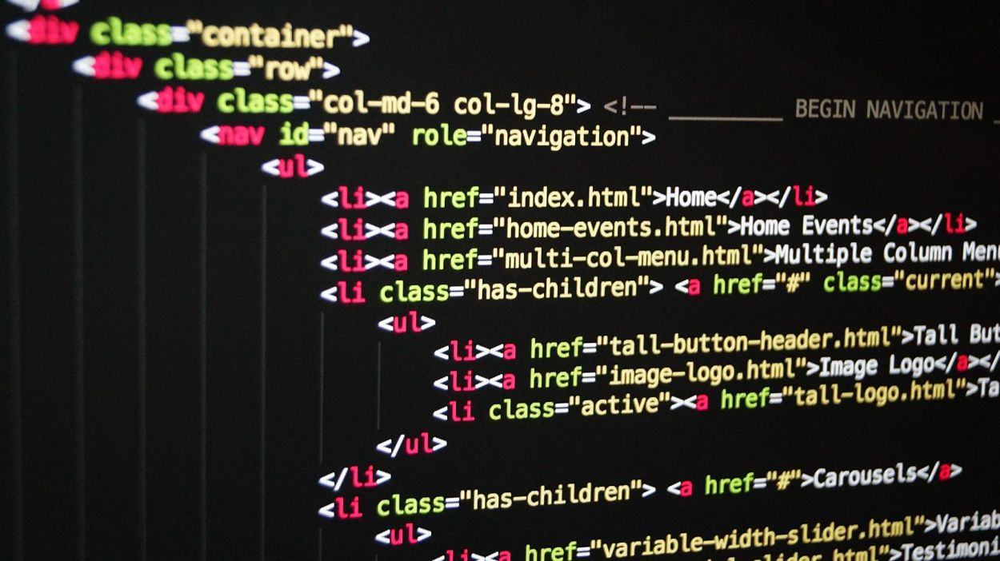

Le "World Wide Web", plus communément appelé "Web" (littéralement la “toile d’envergure mondiale “) a été développé au CERN (Conseil Européen pour la Recherche Nucléaire) par le Britannique Sir Timothy John Berners-Lee au début des années 90. Pour faciliter les échanges d'information entre scientifiques, Tim Berners-Lee met au point le système hypertexte. Le système hypertexte permet, à partir d'un document, de consulter d'autres documents en cliquant sur des mots clés. Ces mots "cliquables" sont appelés hyperliens. Tim Berners-Lee développe aussi le premier navigateur web (logiciel permettant de lire des pages contenant des hypertextes). C'est en 1993 avec l'arrivée du navigateur web "NCSA Mosaic" que le web commence à devenir populaire en dehors du monde de la recherche
Tim Berners-Lee, développeur du premier navigateur web
Le HTML
L’HyperText Markup Language, est le langage de description à balises (ou langage de balisage) conçu pour représenter les pages web. C’est un langage permettant d’écrire de l’hypertexte (texte lié à une autre ressource du Web). HTML permet de structurer le contenu des pages, et d’y inclure des images, des vidéos, du son, des formulaires de saisie, des programmes informatiques.... Il est souvent utilisé conjointement avec des feuilles de style en cascade (CSS) et le langage de programmation JavaScript. La version actuelle est le HTML 5.

Exemple de code HTML5
Ci-dessous quelques balises HTML5 et leur signifiation : head : en-tete title : titre onglet meta : metadonnes (exemple : encodage utf-8) link : lien vers une fiche de style css h1 à h6 : titre de niveau 1 a 6 p : paragraphe a : lien font : police de caractere i : italique b ou strong : gras u : souligne sub : indice sup : exposant small : petite Police big : grande Police strike : raye center : centrer sur la page img : fichier image (ex. png) figcaption : description image audio : fichier audio (ex. mp3) video : fichier video (ex. mp4) br : break line (retour a la ligne) hr : grand trait
Le CSS
Le langage feuilles de styles en cascade (en anglais "Cascading Style Sheets", abrégé CSS) est un langage de description qui permet de gérer la présentation d'une page Web. Les styles permettent de définir des règles appliquées à un ou plusieurs documents HTML. Ces règles portent sur le positionnement des éléments, l'alignement, les polices de caractères, les couleurs, les marges et espacements, etc. La dernière version du CSS est le CSS 3.